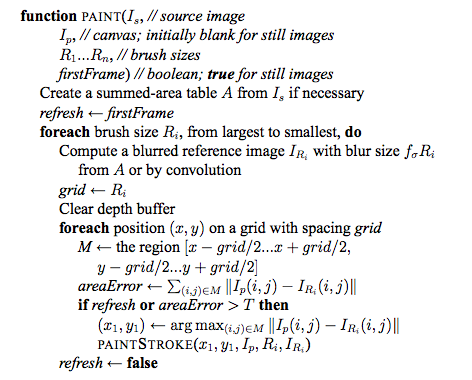
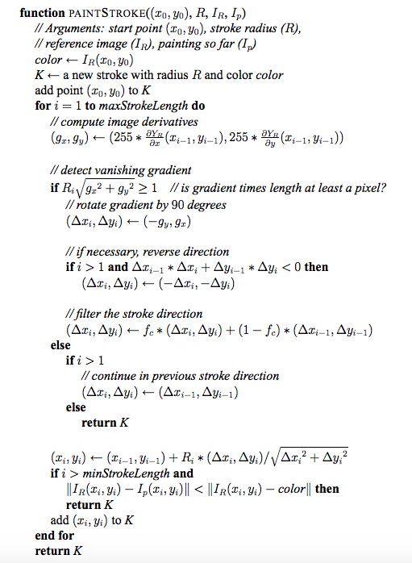

Project Proposal
Title
ParStrokes
By Eileen Jiang (yuanj) and Ashley Lai (ahlai)
Summary
We are going to optimize the process of transforming a photo into a painting by parallelizing the Hertzmann algorithm for rendering in artistic styles.
Background
The application is an interface where users can upload a photo, and the application will pre-process the image using the Hertzmann algorithm to generate a painted depiction of the photo. At a high level, the algorithm renders the image based off of the larger to smaller strokes sizes (which fills up the painting from the background colors to the thinner, more specialized strokes. The computations involved to create these strokes can be intensive and would greatly benefit from parallelism.
The pseudocode for the Hertzmann algorithm is as follows:

Because the image is sectioned off into grids for pre-processing, this algorithm might benefit from parallelism by running through the sections of each grid with multiple threads, The helper function PAINTSTROKE is then run on each grid, and the higher number of dependencies in this helper function make parallelizing PAINTSTROKE more difficult, which is why we’ll have to find a way to improve the speedup for this part.
The Challenge
The problem of parallelizing this algorithm lies in the dependencies of the different steps. Similar to the CUDA assignment, the order that we paint the strokes on top of a particular pixel will matter, and we’ll have to modify the original Hertzmann algorithm to account for this dependency and see how we can minimize the critical sections as much as we can.
Resources
Our project is based off of a 15-112 term project from Spring 2014. The creator of the original term project sent us his code (written entirely in Python), so we will be referencing his implementation and translating it into CUDA. The algorithm he used to process the images can be found in Algorithms for Rendering in Artistic Styles by Aaron Hertzmann (https://www.cs.nyu.edu/media/publications/hertzmann_aaron.pdf). Because we’ll be working in CUDA, we’ll need access to NVIDIA GPUs, which we can find off of the specific ghc machines mentioned in the CUDA assignment.
Goals and Deliverables
We would like to achieve a pre-processing rate of ~10 secs for the algorithm we will be using. The sequential version in Python takes approximately several minutes, and while writing the algorithm in C++ will speed it up due to the language choice, we’d like to optimize it even further by parallelizing the algorithm using the various tools we’ve been introduced to in this class.
If we get ahead of schedule, then beyond trying to speed up our code even more, we could extend it to different kinds of files. For example, we could also process GIF files so that every frame of the GIF becomes a painting, and we generate a new GIF that runs through the paintings instead of the original photos. If we get to this stage, we could run all the different frames at once instead of having to wait for each frame to go through the algorithm.
If we were to show a demo at the parallelism competition, we’d likely be able to do a live-demo of our project by having a random student select an image off the internet, and then we could run our algorithm (which would hopefully finish in a few seconds) to display the outputted painting version of the image. We could also display a graph of the speedups we achieved, starting from the sequential version, all the way to our final, parallelized version.
Platform Choice
We are going to be using C++. We feel that C++ is the best option due to the ease of making programs multi-threaded and the wide availability of libraries that C++ offers.Schedule
Friday, April 1 - Finalize project proposal, review existing codeFriday, April 8 - Finish sequential version of project in C++
Friday, April 15 (CHECKPOINT) - Achieve pre-processing performance of 1 minute
Friday, April 22 - Achieve pre-processing performance of 30 secs
Friday, April 29 - Achieve pre-processing performance of around 10 secs, possibly extend project
Friday, May 6 - Prepare presentation